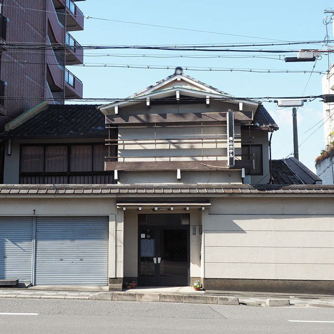
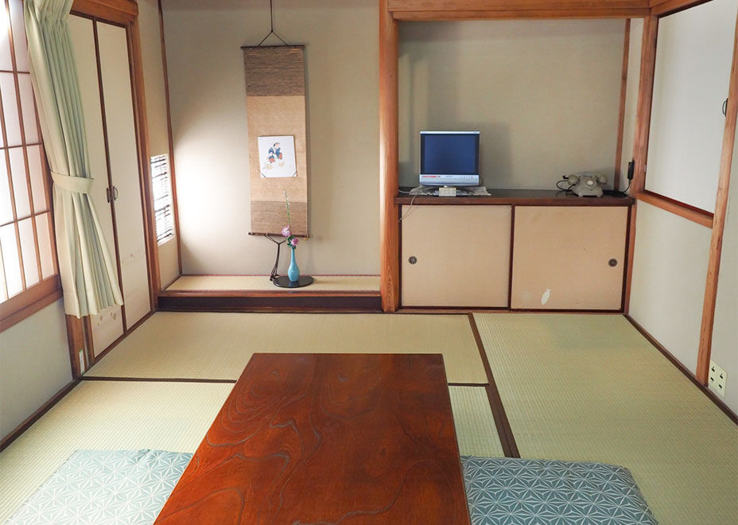
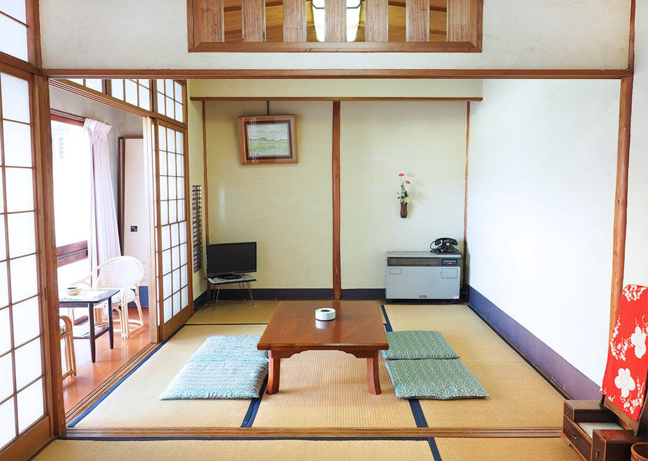
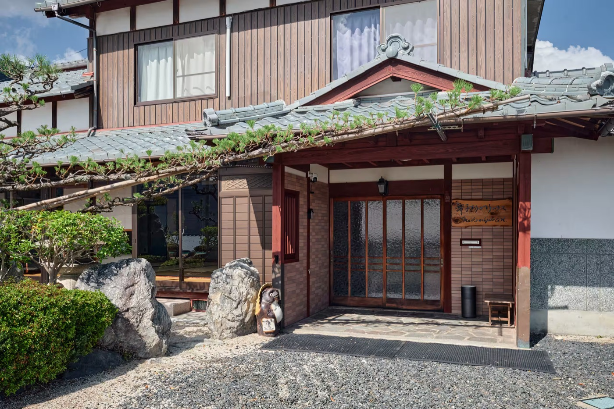
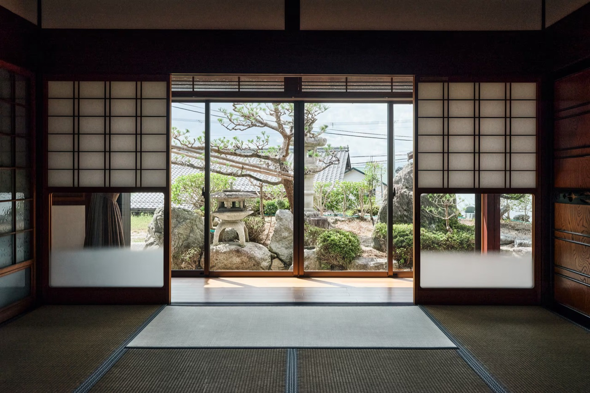
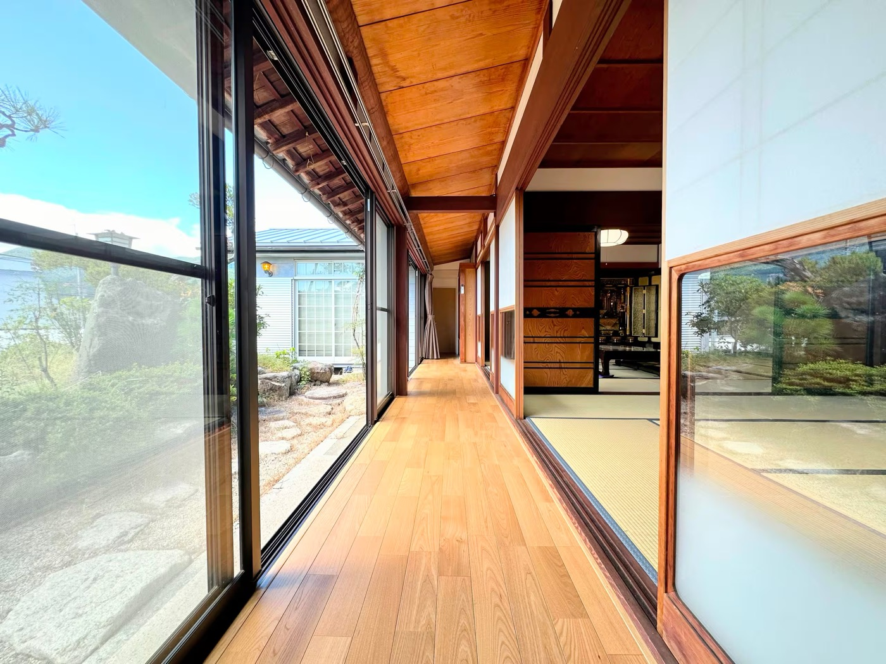
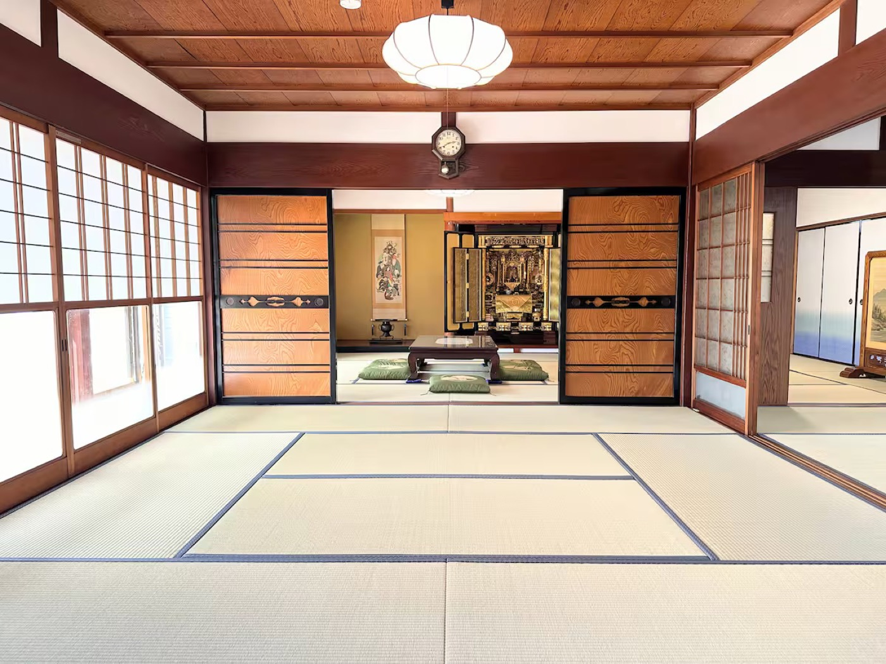

關西住宿
東山 ×4 晚 · 近江舞子 ×4 晚
入住 15:00 ／ 退房 11:00
Hub 1 東山飯店 京都・東山，走路到清水寺
Day 1–4（11/21–25）



- 入住 15:00–20:00，20:00 後無法入住。
- 22:00 宵禁上鎖，之後無法進入。
- 入住當天要先告知房東抵達時間。
- 浴室為家庭式浴缸，共用需協調使用時段。
- 無廚房，早晚餐外食或外帶。
- 房東已確認可提早寄放行李（Day 1 中午抵達先寄放再出門）。
Hub 2 近江舞子 正宗古民家 滋賀・琵琶湖西岸，環湖自駕據點
Day 5–8（11/25–29）




- 有廚房，晚餐可在住宿自理（超市採買）。
- 免費停車 3 台（含大車），自駕停放沒問題。
- 提供腳踏車、兒童餐椅，帶小孩友善。
- 房東已確認可 Day 9 提早自行退房（回程 11:30 班機，07:00 全體出發）。
共通規範
- 入住 15:00 / 退房 11:00 — 早到先寄放行李，別逕自進房。
- 安靜 — 兩間都是老屋／與房東同棟，晚上輕聲。
- 垃圾分類 — 依房東指示分類，離開前整理好。
- 室內脫鞋。
- 不多住人 — 依人數上限，不臨時加人。
- 離開前 — 關窗、關電器、垃圾處理、鑰匙依房東指示歸還。